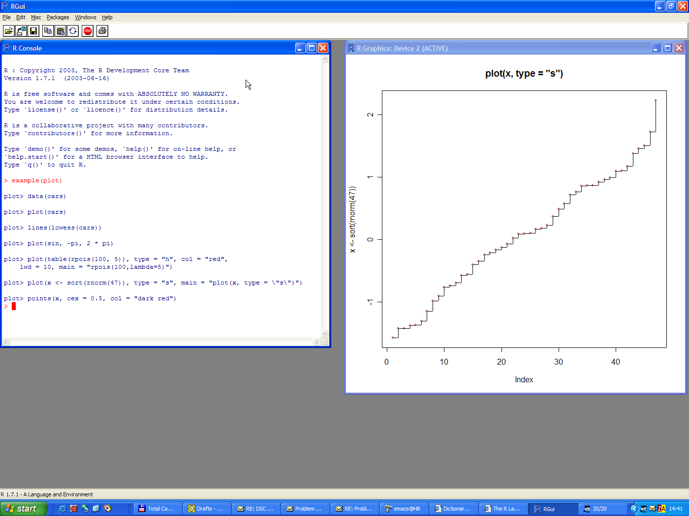
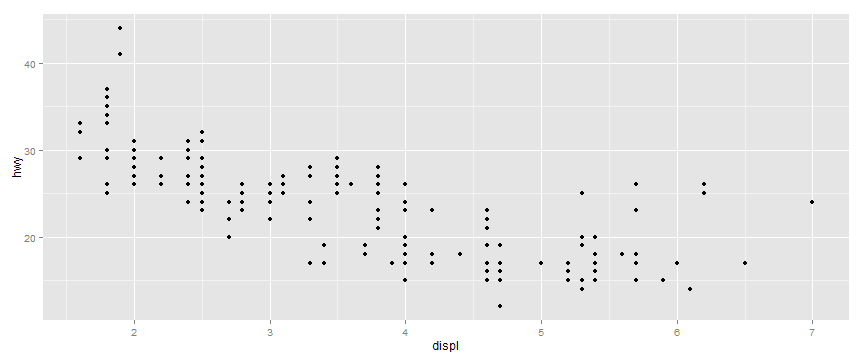
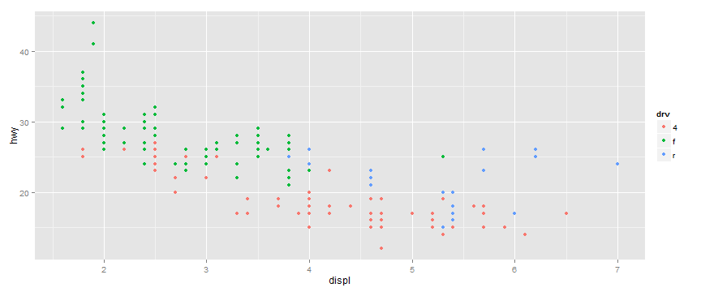
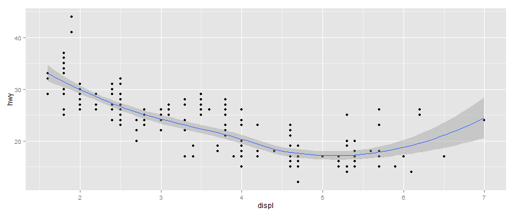
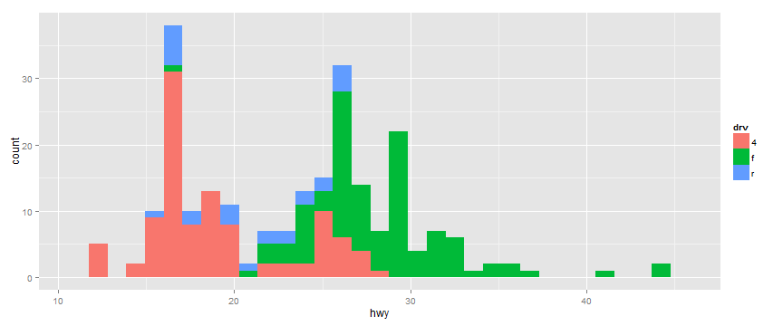
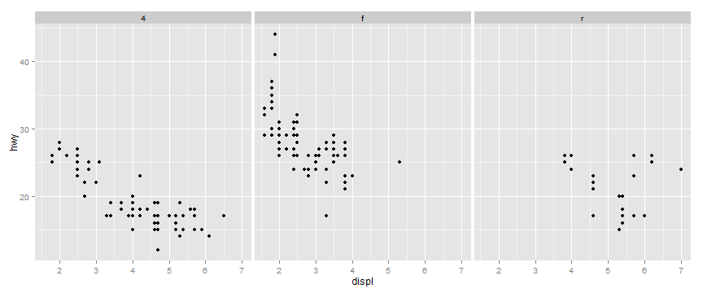

- Getting data from a database or website
- Cleaning data
- Making charts and graphs
- Interacting with data
- Creating presentations and reports
Five Things You Should Be Doing in R
An Introduction
Jason Fuchs
Sr. Product Engineer, Research and Development
The Five Things
Getting R
R - https://cran.r-project.org/

Getting R
RStudio - https://www.rstudio.com/products/rstudio/download/

Basics
- Use the
<-operator to assign - You don't have to use
;at the end of lines, unless combining commands - You don't have to declare a specific type
- Object-oriented people: don't let the
.trick you
x <- 1
x
## [1] 1
y <- c(2, "red", 4); print(y)
## [1] "2" "red" "4"
1. Getting data from a database or website
fileUrl <- "http://data.baltimorecity.gov/api/views/dz54-2aru/rows.csv?accessType=DOWNLOAD"
download.file(fileUrl, destfile="./data/cameras.csv")
Basics: Data Frames
d <- c(1, 2, 3, 4)
e <- c("red", "white", "red", NA)
f <- c(TRUE, TRUE, TRUE, FALSE)
mydata <- data.frame(d, e, f)
names(mydata) <- c("ID", "Color", "Passed") # variable names
print(mydata)
## ID Color Passed
## 1 1 red TRUE
## 2 2 white TRUE
## 3 3 red TRUE
## 4 4 <NA> FALSE
Basics: Data Frames
print(mydata)
## ID Color Passed
## 1 1 red TRUE
## 2 2 white TRUE
## 3 3 red TRUE
## 4 4 <NA> FALSE
mydata[3, 2]
## [1] red
## Levels: red white
1. Getting data from a database or website
cameraData <- read.table("./data/cameras.csv",sep=",",header=TRUE)
head(cameraData)
## address direction street crossStreet
## 1 S CATON AVE & BENSON AVE N/B Caton Ave Benson Ave
## 2 S CATON AVE & BENSON AVE S/B Caton Ave Benson Ave
## 3 WILKENS AVE & PINE HEIGHTS AVE E/B Wilkens Ave Pine Heights
## 4 THE ALAMEDA & E 33RD ST S/B The Alameda 33rd St
## 5 E 33RD ST & THE ALAMEDA E/B E 33rd The Alameda
## 6 ERDMAN AVE & N MACON ST E/B Erdman Macon St
## intersection Location.1
## 1 Caton Ave & Benson Ave (39.2693779962, -76.6688185297)
## 2 Caton Ave & Benson Ave (39.2693157898, -76.6689698176)
## 3 Wilkens Ave & Pine Heights (39.2720252302, -76.676960806)
## 4 The Alameda & 33rd St (39.3285013141, -76.5953545714)
## 5 E 33rd & The Alameda (39.3283410623, -76.5953594625)
## 6 Erdman & Macon St (39.3068045671, -76.5593167803)
1. Getting data from a database or website
Database connections
1. Getting data from a database or website
PostgreSQL example
drv <- dbDriver("PostgreSQL") # Load driver
con <- dbConnect(drv, dbname="tempdb") # Connect
rs <- dbSendQuery(con, "select * from TableName") # Run a query
fetch(rs, n=-1) # Return all elements
dbDisconnect(con) # Disconnect
dbUnloadDriver(drv) # Unload driver
2. Cleaning data
fileUrl <- "http://data.baltimorecity.gov/api/views/k5ry-ef3g/rows.csv?accessType=DOWNLOAD"
download.file(fileUrl, destfile="./data/restaurants.csv")
restData <- read.csv("./data/restaurants.csv")
2. Cleaning data
Summarizing data
str(restData)
## 'data.frame': 1327 obs. of 6 variables:
## $ name : Factor w/ 1277 levels "#1 CHINESE KITCHEN",..: 9 3 992 1 2 4 5 6 7 8 ...
## $ zipCode : int 21206 21231 21224 21211 21223 21218 21205 21211 21205 21231 ...
## $ neighborhood : Factor w/ 173 levels "Abell","Arlington",..: 53 52 18 66 104 33 98 133 98 157 ...
## $ councilDistrict: int 2 1 1 14 9 14 13 7 13 1 ...
## $ policeDistrict : Factor w/ 9 levels "CENTRAL","EASTERN",..: 3 6 6 4 8 3 6 4 6 6 ...
## $ Location.1 : Factor w/ 1210 levels "1 BIDDLE ST\nBaltimore, MD\n",..: 835 334 554 755 492 537 505 530 507 569 ...
Basics: Factors
# variable gender with 20 "male" entries and 30 "female" entries
gender <- c(rep("male",20), rep("female", 30))
gender <- factor(gender)
# stores gender as 20 1s and 30 2s and associates
# 1=female, 2=male internally (alphabetically)
summary(gender)
## female male
## 30 20
str(gender)
## Factor w/ 2 levels "female","male": 2 2 2 2 2 2 2 2 2 2 ...
2. Cleaning data
Finding missing values with is.na
sum(is.na(restData$councilDistrict))
## [1] 0
all(restData$zipCode > 0)
## [1] FALSE
2. Cleaning data
Finding specific values
table(restData$zipCode %in% c("21212"))
##
## FALSE TRUE
## 1299 28
table(restData$zipCode %in% c("21212","21213"))
##
## FALSE TRUE
## 1268 59
3. Making charts and graphs
Loading ggplot2
install.packages("ggplot2")
library(ggplot2)
See also: http://docs.ggplot2.org/current/
3. Making charts and graphs
Example dataset mpg
str(mpg)
## 'data.frame': 234 obs. of 11 variables:
## $ manufacturer: Factor w/ 15 levels "audi","chevrolet",..: 1 1 1 1 1 1 1 1 1 1 ...
## $ model : Factor w/ 38 levels "4runner 4wd",..: 2 2 2 2 2 2 2 3 3 3 ...
## $ displ : num 1.8 1.8 2 2 2.8 2.8 3.1 1.8 1.8 2 ...
## $ year : int 1999 1999 2008 2008 1999 1999 2008 1999 1999 2008 ...
## $ cyl : int 4 4 4 4 6 6 6 4 4 4 ...
## $ trans : Factor w/ 10 levels "auto(av)","auto(l3)",..: 4 9 10 1 4 9 1 9 4 10 ...
## $ drv : Factor w/ 3 levels "4","f","r": 2 2 2 2 2 2 2 1 1 1 ...
## $ cty : int 18 21 20 21 16 18 18 18 16 20 ...
## $ hwy : int 29 29 31 30 26 26 27 26 25 28 ...
## $ fl : Factor w/ 5 levels "c","d","e","p",..: 4 4 4 4 4 4 4 4 4 4 ...
## $ class : Factor w/ 7 levels "2seater","compact",..: 2 2 2 2 2 2 2 2 2 2 ...
3. Making charts and graphs
qplot(displ, hwy, data = mpg)

3. Making charts and graphs
qplot(displ, hwy, data = mpg, color = drv)

3. Making charts and graphs
qplot(displ, hwy, data = mpg, geom = c("point", "smooth"))

3. Making charts and graphs
qplot(displ, hwy, data = mpg, facets = . ~ drv)

3. Making charts and graphs
qplot(hwy, data = mpg, facets = drv ~ ., binwidth = 2)

4. Interacting with data
manipulate function
library(manipulate)
manipulate(plot(1:x), x = slider(1, 100))
Another option: Deploy to Shiny